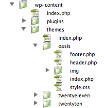

A WordPress child theme is a theme that inherits the functionality of another theme, called the parent theme, and allows you to modify, or add to, the functionality of that parent theme. This article shows how to create a basic child theme and explains what you can do with it. As an example parent theme it uses Twenty Eleven, the new default theme in WordPress 3.0.
Making a child theme is very simple. Create a directory, put a properly formatted style.css file in it, and you have a child theme! With a little understanding of HTML and CSS, you can make that very basic child theme modify the styling and layout of a parent theme to any extent without editing the files of the parent theme itself. That way, when the parent theme is updated, your modifications are preserved.
For this reason, child themes are the recommended way of making modifications to a theme.
With a basic understanding of PHP, WordPress Templates, and the WordPress Plugin API, you can make the child theme extend virtually every aspect of a parent theme, and again, without actually changing the parent theme files.
You can find your theme files on your webserver at /wp-content
First off, WordPress is very much build around the assumption that you are making a blog and all that entails, such as posts that are tagged and catagorized, comments, pingbacks, blog rolls, filtering posts. The documentation and examples are built around this assumption. That said, you can force WordPress to act more like a traditional CMS.
This is remarkable easy to do once if figure out what's important and what can be deleted.
background: url(myImage.jpg);)